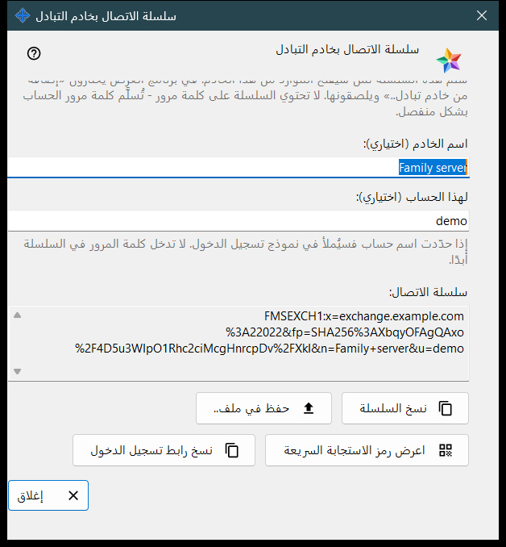
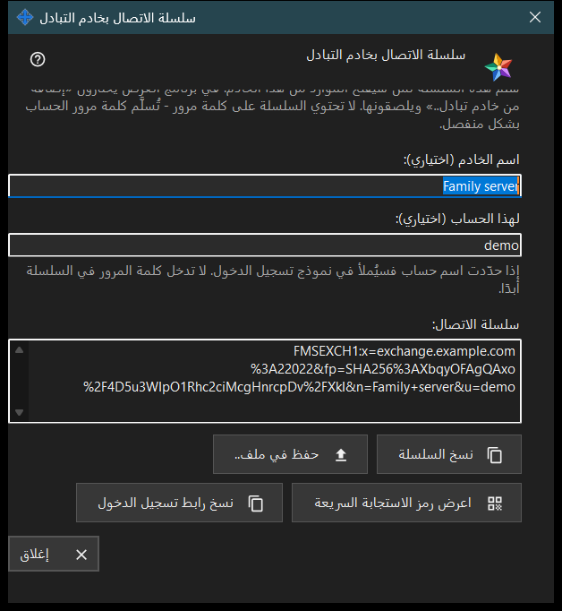

سلسلة الاتصال بخادم التبادل
الغرض من هذه النافذة
تُنشئ هذه النافذة سلسلة الاتصال التي تستخدمها الأجهزة الأخرى للعثور على خادم التبادل هذا والتحقق من شهادته. افتحها بالزر سلسلة الاتصال ورمز QR.. الموجود في إعدادات خادم التبادل أو في ترحيب الخادم عند أول تشغيل. لا تغيّر النافذة أي إعداد.


بهذا الترتيب
- تأكد من أن للخادم شهادة وأن العنوان الذي يستخدمه العملاء محدّد.
- افتح النافذة: تظهر السلسلة فورًا.
- إن رغبت، اكتب اسمًا للخادم واسم حساب؛ وتُعاد صياغة السلسلة بعد لحظة من توقفك عن الكتابة.
- انسخ السلسلة، أو احفظها في ملف، أو اعرض رمز QR الخاص بها، أو انسخ رابط تسجيل الدخول.
- سلّمها للشخص الآخر وسلّم كلمة مرور الحساب على حدة.
- اضغط إغلاق.
عناصر النافذة
متى يعمل الزر
يكون الزر سلسلة الاتصال ورمز QR.. مفعّلًا فقط عندما يكون للخادم شهادة ويكون العنوان الذي يستخدمه العملاء محدّدًا. وإذا كان العنوان فارغًا يبقى الزر معطّلًا ويظهر أسفله التلميح: حدّد أولًا العنوان الذي يستخدمه العملاء: لا يمكن إنشاء سلسلة الاتصال بدونه. وداخل النافذة تبقى الأزرار معطّلة ما دامت السلسلة غير موجودة.
اسم الخادم واسم الحساب
الحقل اسم الخادم (اختياري): يقبل حتى 64 حرفًا ويُخزَّن في السلسلة اسمًا للخادم. والحقل لهذا الحساب (اختياري): يقبل من 3 إلى 64 حرفًا (a-z وأرقام ونقطة وشرطة سفلية وواصلة) ويُملأ في نموذج تسجيل الدخول على الجهاز الذي يستخدم السلسلة. ولا تدخل كلمة المرور في السلسلة أبدًا.
سلسلة الاتصال
سلسلة الاتصال: مربع للقراءة فقط يعرض النتيجة: العنوان الذي يستخدمه العملاء وبصمة الشهادة، ثم الاسم واسم الحساب إن كُتبا. يثق الجهاز الذي يستلم السلسلة بالبصمة الواردة فيها، فلا يحتاج أحد إلى مقارنتها يدويًا.
النسخ والحفظ
الزر نسخ السلسلة يضع السلسلة في الحافظة نصًا عاديًا لأنها ليست سرًّا، ويظهر السطر أسفله: تم نسخ السلسلة. والزر حفظ في ملف.. يكتب ملفًا نصيًا بامتداد .fmsexch (الاسم المقترح exchange-server.fmsexch) ويعرض مساره؛ ويقرأه الجهاز الآخر بالزر فتح ملف.. في نافذة حساب التبادل لديه. وإذا كانت الحافظة مشغولة أو تعذّرت كتابة الملف يذكر سطر ذلك.
رمز QR ورابط تسجيل الدخول
الزر اعرض رمز الاستجابة السريعة يفتح صورة للسلسلة نفسها لمسحها ضوئيًا؛ وهي تسمّي خادمًا ولا تمنح الوصول إلى أي شيء. ويظهر الزر نسخ رابط تسجيل الدخول فقط عندما يقدّم هذا الخادم عميل ويب؛ وهو ينسخ رابطًا للمتصفح يحمل السلسلة نفسها.
إذا تعذّر إنشاء السلسلة
يذكر سطر بلون التحذير السبب: الاسم أو اسم الحساب خارج الحدود المسموحة؛ أو ليس للخادم شهادة (شغّل الخادم مرة واحدة)؛ أو لم يستجب خادم التبادل. عالج السبب فتُعاد صياغة السلسلة. والزر إغلاق يُنهي النافذة؛ ولا يُحفظ الاسم ولا اسم الحساب.